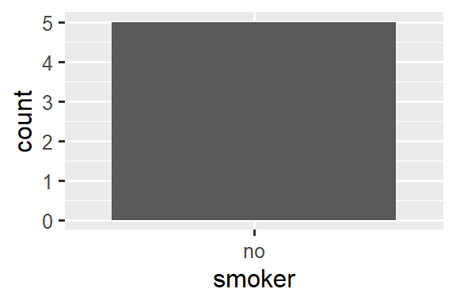
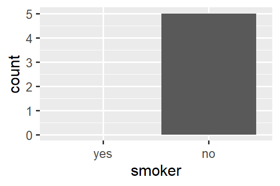

19 Missing values
You are reading the work-in-progress second edition of R for Data Science. This chapter is largely complete and just needs final proof reading. You can find the complete first edition at https://r4ds.had.co.nz.
19.1 Introduction
You’ve already learned the basics of missing values earlier in the book. You first saw them in sec-data-visualization where they resulted in a warning when making a plot as well as in sec-summarize where they interfered with computing summary statistics, and you learned about their infectious nature and how to check for their presence in sec-na-comparison. Now we’ll come back to them in more depth, so you can learn more of the details.
We’ll start by discussing some general tools for working with missing values recorded as NAs. We’ll then explore the idea of implicitly missing values, values are that are simply absent from your data, and show some tools you can use to make them explicit. We’ll finish off with a related discussion of empty groups, caused by factor levels that don’t appear in the data.
19.1.1 Prerequisites
The functions for working with missing data mostly come from dplyr and tidyr, which are core members of the tidyverse.
19.2 Explicit missing values
To begin, let’s explore a few handy tools for creating or eliminating missing explicit values, i.e. cells where you see an NA.
19.2.1 Last observation carried forward
A common use for missing values is as a data entry convenience. When data is entered by hand, missing values sometimes indicate that the value in the previous row has been repeated (or carried forward):
treatment <- tribble(
~person, ~treatment, ~response,
"Derrick Whitmore", 1, 7,
NA, 2, 10,
NA, 3, NA,
"Katherine Burke", 1, 4
)You can fill in these missing values with tidyr::fill(). It works like select(), taking a set of columns:
treatment |>
fill(everything())
#> # A tibble: 4 × 3
#> person treatment response
#> <chr> <dbl> <dbl>
#> 1 Derrick Whitmore 1 7
#> 2 Derrick Whitmore 2 10
#> 3 Derrick Whitmore 3 10
#> 4 Katherine Burke 1 4This treatment is sometimes called “last observation carried forward”, or locf for short. You can use the .direction argument to fill in missing values that have been generated in more exotic ways.
19.2.2 Fixed values
Some times missing values represent some fixed and known value, most commonly 0. You can use dplyr::coalesce() to replace them:
Sometimes you’ll hit the opposite problem where some concrete value actually represents a missing value. This typically arises in data generated by older software that doesn’t have a proper way to represent missing values, so it must instead use some special value like 99 or -999.
If possible, handle this when reading in the data, for example, by using the na argument to readr::read_csv(), e.g., read_csv(path, na = "99"). If you discover the problem later, or your data source doesn’t provide a way to handle it on read, you can use dplyr::na_if():
19.2.3 NaN
Before we continue, there’s one special type of missing value that you’ll encounter from time to time: a NaN (pronounced “nan”), or not a number. It’s not that important to know about because it generally behaves just like NA:
In the rare case you need to distinguish an NA from a NaN, you can use is.nan(x).
You’ll generally encounter a NaN when you perform a mathematical operation that has an indeterminate result:
0 / 0
#> [1] NaN
0 * Inf
#> [1] NaN
Inf - Inf
#> [1] NaN
sqrt(-1)
#> Warning in sqrt(-1): NaNs produced
#> [1] NaN19.3 Implicit missing values
So far we’ve talked about missing values that are explicitly missing, i.e. you can see an NA in your data. But missing values can also be implicitly missing, if an entire row of data is simply absent from the data. Let’s illustrate the difference with a simple dataset that records the price of some stock each quarter:
This dataset has two missing observations:
The
pricein the fourth quarter of 2020 is explicitly missing, because its value isNA.The
pricefor the first quarter of 2021 is implicitly missing, because it simply does not appear in the dataset.
One way to think about the difference is with this Zen-like koan:
An explicit missing value is the presence of an absence.
An implicit missing value is the absence of a presence.
Sometimes you want to make implicit missings explicit in order to have something physical to work with. In other cases, explicit missings are forced upon you by the structure of the data and you want to get rid of them. The following sections discuss some tools for moving between implicit and explicit missingness.
19.3.1 Pivoting
You’ve already seen one tool that can make implicit missings explicit and vice versa: pivoting. Making data wider can make implicit missing values explicit because every combination of the rows and new columns must have some value. For example, if we pivot stocks to put the quarter in the columns, both missing values become explicit:
stocks |>
pivot_wider(
names_from = qtr,
values_from = price
)
#> # A tibble: 2 × 5
#> year `1` `2` `3` `4`
#> <dbl> <dbl> <dbl> <dbl> <dbl>
#> 1 2020 1.88 0.59 0.35 NA
#> 2 2021 NA 0.92 0.17 2.66By default, making data longer preserves explicit missing values, but if they are structurally missing values that only exist because the data is not tidy, you can drop them (make them implicit) by setting values_drop_na = TRUE. See the examples in sec-tidy-data for more details.
19.3.2 Complete
tidyr::complete() allows you to generate explicit missing values by providing a set of variables that define the combination of rows that should exist. For example, we know that all combinations of year and qtr should exist in the stocks data:
stocks |>
complete(year, qtr)
#> # A tibble: 8 × 3
#> year qtr price
#> <dbl> <dbl> <dbl>
#> 1 2020 1 1.88
#> 2 2020 2 0.59
#> 3 2020 3 0.35
#> 4 2020 4 NA
#> 5 2021 1 NA
#> 6 2021 2 0.92
#> # ℹ 2 more rowsTypically, you’ll call complete() with names of existing variables, filling in the missing combinations. However, sometimes the individual variables are themselves incomplete, so you can instead provide your own data. For example, you might know that the stocks dataset is supposed to run from 2019 to 2021, so you could explicitly supply those values for year:
stocks |>
complete(year = 2019:2021, qtr)
#> # A tibble: 12 × 3
#> year qtr price
#> <dbl> <dbl> <dbl>
#> 1 2019 1 NA
#> 2 2019 2 NA
#> 3 2019 3 NA
#> 4 2019 4 NA
#> 5 2020 1 1.88
#> 6 2020 2 0.59
#> # ℹ 6 more rowsIf the range of a variable is correct, but not all values are present, you could use full_seq(x, 1) to generate all values from min(x) to max(x) spaced out by 1.
In some cases, the complete set of observations can’t be generated by a simple combination of variables. In that case, you can do manually what complete() does for you: create a data frame that contains all the rows that should exist (using whatever combination of techniques you need), then combine it with your original dataset with dplyr::full_join().
19.3.3 Joins
This brings us to another important way of revealing implicitly missing observations: joins. You’ll learn more about joins in sec-joins, but we wanted to quickly mention them to you here since you can often only know that values are missing from one dataset when you compare it to another.
dplyr::anti_join(x, y) is a particularly useful tool here because it selects only the rows in x that don’t have a match in y. For example, we can use two anti_join()s to reveal that we’re missing information for four airports and 722 planes mentioned in flights:
library(nycflights13)
flights |>
distinct(faa = dest) |>
anti_join(airports)
#> Joining with `by = join_by(faa)`
#> # A tibble: 4 × 1
#> faa
#> <chr>
#> 1 BQN
#> 2 SJU
#> 3 STT
#> 4 PSE
flights |>
distinct(tailnum) |>
anti_join(planes)
#> Joining with `by = join_by(tailnum)`
#> # A tibble: 722 × 1
#> tailnum
#> <chr>
#> 1 N3ALAA
#> 2 N3DUAA
#> 3 N542MQ
#> 4 N730MQ
#> 5 N9EAMQ
#> 6 N532UA
#> # ℹ 716 more rows19.3.4 Exercises
- Can you find any relationship between the carrier and the rows that appear to be missing from
planes?
19.4 Factors and empty groups
A final type of missingness is the empty group, a group that doesn’t contain any observations, which can arise when working with factors. For example, imagine we have a dataset that contains some health information about people:
And we want to count the number of smokers with dplyr::count():
health |> count(smoker)
#> # A tibble: 1 × 2
#> smoker n
#> <fct> <int>
#> 1 no 5This dataset only contains non-smokers, but we know that smokers exist; the group of non-smoker is empty. We can request count() to keep all the groups, even those not seen in the data by using .drop = FALSE:
health |> count(smoker, .drop = FALSE)
#> # A tibble: 2 × 2
#> smoker n
#> <fct> <int>
#> 1 yes 0
#> 2 no 5The same principle applies to ggplot2’s discrete axes, which will also drop levels that don’t have any values. You can force them to display by supplying drop = FALSE to the appropriate discrete axis:
ggplot(health, aes(x = smoker)) +
geom_bar() +
scale_x_discrete()
ggplot(health, aes(x = smoker)) +
geom_bar() +
scale_x_discrete(drop = FALSE){fig-alt=’A bar chart with a single value on the x-axis, “no”.
The same bar chart as the last plot, but now with two values on the x-axis, “yes” and “no”. There is no bar for the “yes” category.’ width=288}
{fig-alt=’A bar chart with a single value on the x-axis, “no”.
The same bar chart as the last plot, but now with two values on the x-axis, “yes” and “no”. There is no bar for the “yes” category.’ width=288}
The same problem comes up more generally with dplyr::group_by(). And again you can use .drop = FALSE to preserve all factor levels:
health |>
group_by(smoker, .drop = FALSE) |>
summarize(
n = n(),
mean_age = mean(age),
min_age = min(age),
max_age = max(age),
sd_age = sd(age)
)
#> # A tibble: 2 × 6
#> smoker n mean_age min_age max_age sd_age
#> <fct> <int> <dbl> <dbl> <dbl> <dbl>
#> 1 yes 0 NaN Inf -Inf NA
#> 2 no 5 60 34 88 21.6We get some interesting results here because when summarizing an empty group, the summary functions are applied to zero-length vectors. There’s an important distinction between empty vectors, which have length 0, and missing values, each of which has length 1.
All summary functions work with zero-length vectors, but they may return results that are surprising at first glance. Here we see mean(age) returning NaN because mean(age) = sum(age)/length(age) which here is 0/0. max() and min() return -Inf and Inf for empty vectors so if you combine the results with a non-empty vector of new data and recompute you’ll get the minimum or maximum of the new data1.
Sometimes a simpler approach is to perform the summary and then make the implicit missings explicit with complete().
health |>
group_by(smoker) |>
summarize(
n = n(),
mean_age = mean(age),
min_age = min(age),
max_age = max(age),
sd_age = sd(age)
) |>
complete(smoker)
#> # A tibble: 2 × 6
#> smoker n mean_age min_age max_age sd_age
#> <fct> <int> <dbl> <dbl> <dbl> <dbl>
#> 1 yes NA NA NA NA NA
#> 2 no 5 60 34 88 21.6The main drawback of this approach is that you get an NA for the count, even though you know that it should be zero.
19.5 Summary
Missing values are weird! Sometimes they’re recorded as an explicit NA but other times you only notice them by their absence. This chapter has given you some tools for working with explicit missing values, tools for uncovering implicit missing values, and discussed some of the ways that implicit can become explicit and vice versa.
In the next chapter, we tackle the final chapter in this part of the book: joins. This is a bit of a change from the chapters so far because we’re going to discuss tools that work with data frames as a whole, not something that you put inside a data frame.
In other words,
min(c(x, y))is always equal tomin(min(x), min(y)).↩︎